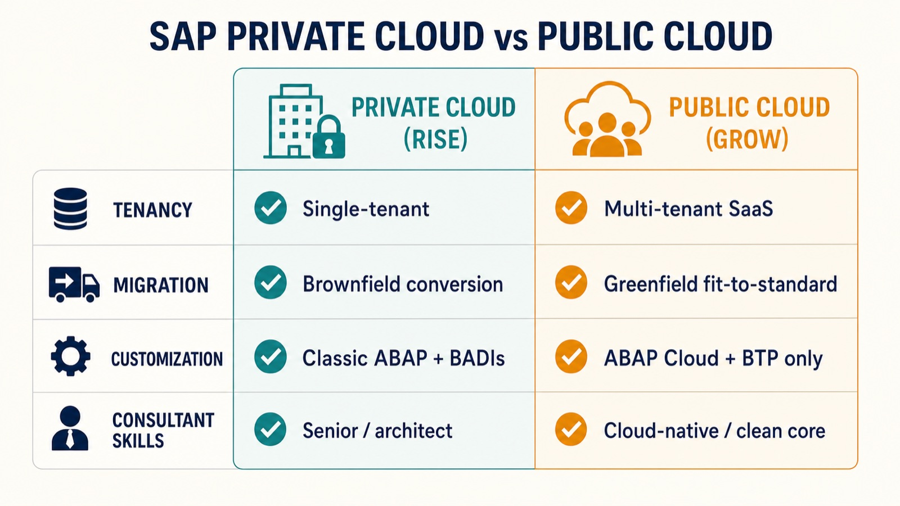

"Public Cloud enforces clean core by design, whereas Private Cloud requires conscious governance and strategic decision-making."
— The single distinction that shapes both delivery and skills
If you only remember one thing about SAP's two cloud editions, make it this: private cloud and public cloud are not simply two places to host the same system. They are two different philosophies of how you deliver an ERP project and, as a direct consequence, they call for two different kinds of consultant. By the end of this guide you will understand what each edition is, how a project is actually delivered on each, and precisely which skills each one rewards, so you can choose the right path whether you are planning a migration or planning a career.
First, the Two Editions and Their Bundles
Let us define the terms cleanly, because the naming trips everyone up. SAP S/4HANA is SAP's flagship ERP (Enterprise Resource Planning) system, the software that runs finance, supply chain, HR, and operations. It comes in two cloud editions. Public Cloud is a multi-tenant service, meaning many customers share the same underlying software instance (like apartments in one building), fully managed by SAP. Private Cloud is single-tenant, meaning each customer gets its own dedicated instance (like a detached house), on dedicated infrastructure managed by SAP or a hyperscaler.
These editions are usually sold through two commercial bundles whose names you will hear constantly. GROW with SAP is the package for the public cloud edition, aimed at new customers who want a fast, standardized cloud ERP. RISE with SAP is the package for the private cloud edition, aimed largely at existing SAP customers converting a complex, heavily customized ECC system to S/4HANA. We covered the RISE journey in depth in our explainer on the RISE with SAP methodology, and the broader move to cloud in our overview of SAP's enterprise cloud transformation.
Remember This
Public Cloud = GROW with SAP = multi-tenant, standardized, fast. Private Cloud = RISE with SAP = single-tenant, customizable, built for complex ECC conversions. Almost every difference in delivery and skills flows from this one split between "adapt to the software" and "adapt the software."
The Delivery Approach: Fit-to-Standard vs. Conversion
The way a project is actually run differs at the root, starting with how you get your data and processes into the new system. Public Cloud is delivered through a greenfield approach, meaning a fresh implementation: you rebuild your processes around SAP's pre-configured best-practice templates, and legacy custom code does not come across. The guiding method is fit-to-standard, a series of workshops where you adapt your business to the standard process rather than bending the software to your current habits. Because so much is pre-built, public cloud implementations are fast, with reported timelines commonly in the range of two to six months, and core processes sometimes live within weeks.
Private Cloud supports a brownfield approach, meaning a system conversion: your existing ECC configuration, custom code, and historical data are carried across while the technical foundation is upgraded to S/4HANA. This preserves years of accumulated customization and is why large, complex enterprises choose it. The trade-off is that conversions are more involved and take longer, because you are moving a living, customized system rather than starting clean. If the distinction between greenfield, brownfield, and selective approaches is new to you, our guide to choosing an ECC-to-S/4HANA migration path walks through all three.
Customization and Clean Core: The Heart of the Difference
Here is where the two editions truly diverge, and it is worth slowing down. The key concept is clean core: the principle of keeping the S/4HANA core software close to standard and building any custom logic outside it, through official interfaces, rather than modifying the core code directly. A clean core means painless upgrades; a modified core means every upgrade risks breaking your customizations.
Public Cloud enforces clean core by design. You simply cannot modify the core code. All customization must happen through approved extensibility layers, and configuration is done through tools like SSCUIs (Self-Service Configuration UIs) and Central Business Configuration rather than deep technical settings. SAP delivers quarterly updates automatically. Private Cloud permits clean-core deviations but does not force them: you retain full access to the classic configuration environment (the IMG, or Implementation Guide) and can still write classic ABAP, SAP's programming language, and use technical enhancement points called BADIs. That freedom is powerful, but it means clean core becomes a matter of conscious governance and discipline rather than something the platform guarantees.
In public cloud, extensibility is channeled into three well-defined routes, and knowing them is essential: Key User Extensibility (low-code changes made through Fiori apps by business power users), Developer Extensibility (coding in ABAP Cloud, a restricted, upgrade-safe version of ABAP that only uses released APIs), and Side-by-Side Extensibility (building separate apps on SAP Business Technology Platform, or BTP, that talk to S/4HANA through published APIs and events).

Side by Side: The Comparison at a Glance
| Dimension | Private Cloud (RISE) | Public Cloud (GROW) |
|---|---|---|
| Tenancy | Single-tenant, dedicated | Multi-tenant SaaS |
| Migration | Brownfield conversion | Greenfield, fit-to-standard |
| Customization | Classic ABAP, BADIs, IMG access | Extensibility only (no core changes) |
| Clean core | By governance | By design (enforced) |
| Updates | More control over timing | Automatic quarterly |
| Typical timeline | Longer (complex conversions) | ~2 to 6 months |
| Best for | Large, complex, customized enterprises | New customers, standardized processes |
The Consultant Skills Each One Rewards
Because the delivery models differ, the two editions draw on genuinely different professional profiles, and this is the part most career-minded readers care about most.
Public Cloud (GROW) rewards cloud-native skills. The valuable consultant here is fluent in fit-to-standard facilitation, Central Business Configuration, the three extensibility routes, ABAP Cloud (not classic ABAP), BTP, API management, and integration. There is no core ABAP modification to do, so the emphasis shifts from writing deep custom code to configuring cleverly within the guardrails and extending safely outside them. This makes GROW an excellent entry point for newer consultants and for anyone committing to a clean-core, cloud-first career.
Private Cloud (RISE) rewards depth and breadth. Because classic ABAP, BADIs, and full IMG configuration are still on the table, RISE draws on the traditional deep-configuration and development expertise that senior consultants, solution architects, and people transitioning from ECC already possess, plus the newer clean-core governance judgment to know when not to use that power. It is generally the domain of more experienced practitioners handling complex, enterprise-grade landscapes. The talent scarcity in senior SAP roles is felt most acutely exactly here.
Remember This
A useful shorthand: GROW consultants are configuration-and-extension specialists who keep the core clean because the platform makes them; RISE consultants are deep configuration-and-development experts who must choose to keep the core clean. One skillset is about mastering the guardrails, the other about exercising judgment where there are fewer of them.
The Bigger Shift: From Projects to Continuous Partnership
There is a deeper change underneath both editions that is reshaping the consulting profession itself. In the classic on-premise world, an SAP project had a beginning, a middle, and a go-live that marked the end. In the cloud world, especially with automatic quarterly updates, the work never really ends. The engagement model is shifting from episodic, fixed-scope projects toward continuous service agreements and managed delivery, where teams act as ongoing "delivery cells" that monitor configuration and prepare for each quarterly release.
Success is measured less by hitting a single go-live date and more by how smoothly the system adapts over time. For consultants, this means the career rhythm changes: senior people move toward "product owner" style roles managing a living landscape, and staying current with quarterly innovation cycles becomes as important as deep one-time implementation knowledge. This is part of the same operating-model rethink we explored in why AI and cloud force companies to redesign how IT and business work together.
Common Mistakes and Misconceptions
- "Private cloud is just public cloud with more space." No. The defining difference is single vs. multi-tenancy and, crucially, whether you can modify the core. It is an architectural and delivery difference, not a capacity upgrade.
- "Public cloud means no customization at all." Not true. It means no core modification. You can still extend substantially through key-user, developer (ABAP Cloud), and side-by-side (BTP) routes; you just cannot touch the core.
- "Classic ABAP skills are dead." Not in private cloud, where they remain valuable. But the growth trajectory clearly favors ABAP Cloud, BTP, and clean-core skills, so treating classic ABAP as your only skill is the real risk.
- "Choosing the edition is purely a technical decision." It is a business decision first. How much your differentiated processes depend on customization, your appetite for standardization, and your migration starting point should drive the choice, not just IT preference.
Quick Glossary
- Multi-tenant / Single-tenant
- Many customers sharing one instance vs. each customer having a dedicated instance.
- Fit-to-standard
- A delivery method where you adapt your processes to SAP's standard templates instead of customizing the software.
- Greenfield / Brownfield
- A fresh reimplementation vs. a conversion that carries an existing system's config and data forward.
- Clean core
- Keeping the S/4HANA core standard and building custom logic outside it via released interfaces.
- ABAP Cloud
- A restricted, upgrade-safe version of SAP's ABAP language that only uses released APIs.
- BTP (Business Technology Platform)
- SAP's platform for building side-by-side extensions and integrations outside the ERP core.
Where This Fits and What to Learn Next
Understanding the private vs. public cloud split is foundational because nearly every other SAP decision, migration path, budget, timeline, team composition, and even hiring plan, cascades from it. Get this choice right and the rest of the program has a coherent shape; get it wrong and you will spend the project fighting the platform's assumptions.
If you want to go deeper, three next steps make sense. Learn the SAP Activate methodology, SAP's standard implementation framework that structures both greenfield and brownfield deliveries. Get hands-on with BTP and ABAP Cloud, since clean-core extensibility is the common future of both editions. And follow the quarterly release notes, because in a cloud world the ability to absorb continuous change is itself the core skill. Whether you are steering a migration or building a career, the private-versus-public decision is the map that makes everything else legible.